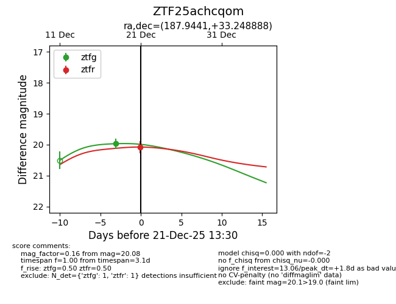
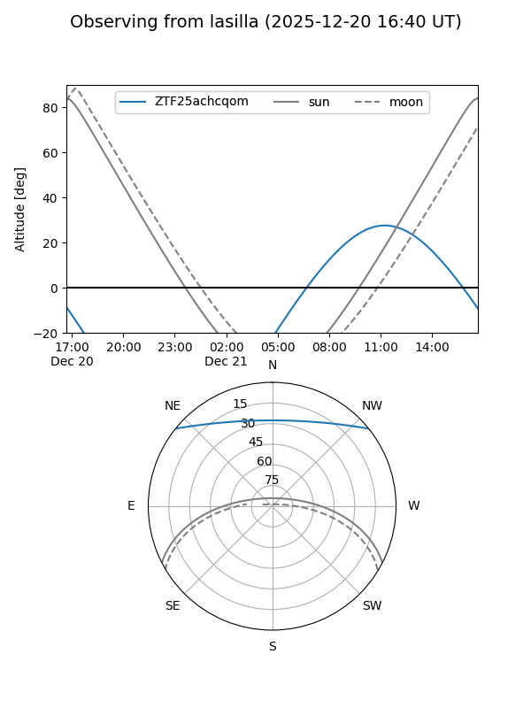
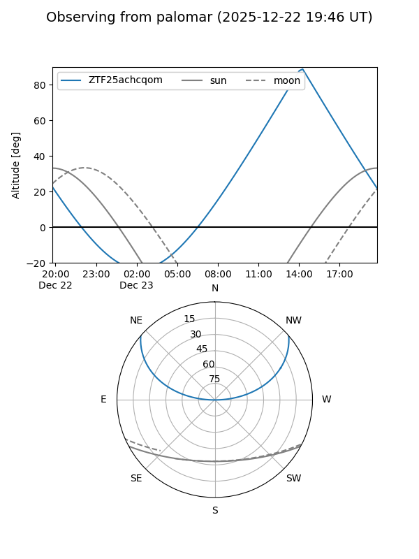
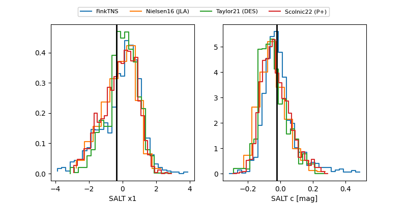

ZTF25achcqom
Target ZTF25achcqom at 2025-12-21 13:32
Aliases and brokers:
FINK: fink-portal.org/ZTF25achcqom
Lasair: lasair-ztf.lsst.ac.uk/objects/ZTF25achcqom
ALeRCE: alerce.online/object/ZTF25achcqom
alt names
ZTF25achcqom (ztf,fink_ztf)
Coordinates:
equatorial (ra, dec) = 187.9441,+33.24889
equatorial (HMS+DMS) = 12:31:46.59,+33:14:56.00
galactic (l, b) = (156.4899,+82.55176)
Flags:
Photometry:
last ztfg=19.97, ztfr=20.08
1 ztfg, 1 ztfr detections
Lightcurve

Visibility


Additional plots
